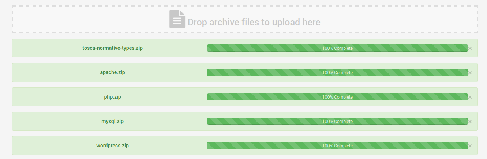
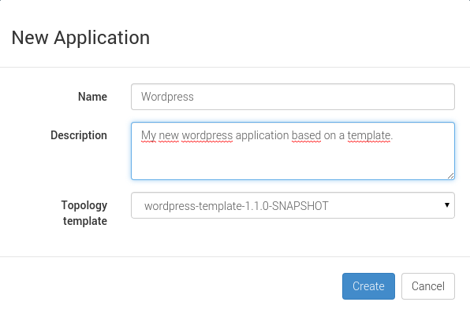

Quick Start
Configure and start Cloudify 2 or 3
Regarding your choice between providers for Cloudify 2 or 3, please refer to those following sections :
Start and configure Alien 4 Cloud
Assuming you have downloaded the standalone version in the prerequisite step you will only have to execute the following command in your shell :
java -XX:MaxPermSize=512m -jar alien4cloud-ui-VERSION-standalone.war --spring.profiles.active=security-demoThe command option --spring.profiles.active=security-demo allows you to have Alien 4 Cloud
started with default settings such as the default user admin we will use later.
Install and configure provider plugin
In this step, you will have to import the chosen provider plugin and then configure it. Refer to the following sections :
In our tutorial, let’s call the configured cloud OpenStackCloud.
Import components in Alien 4 Cloud
Regardless the used provider, read the following section to know how to import your components archive.
Normative types
The TOSCA specification used by Alien 4 Cloud is defining normative types. As a language, you can use those components as is or extend it to suit to your needs.
You can find our implementation for these types on github here : normative types on github
This download link will provide a zip with a subfolder. Ensure that this subfolder doest not exist or the component upload will fail.
You must have a zip with this file tree :
├── images
│ ├── compute.png
│ ├── loadbalancer.png
│ ├── network.png
│ ├── objectstore.png
│ ├── relational_db.png
│ ├── root.png
│ ├── router.png
│ ├── software.png
│ └── volume.png
├── normative-types.yml
└── README.mdRequired types for Wordpress
The Wordpress topology is using custom types, we have to upload them first.
Find those types on github here : samples repository
- apache : the webserver here
- php : the php interperter here
- mysql : the database required by Wordpress here
- wordpress : the blog component here
Zip the content of each folder like you did for normative types and upload each zipped file in this order.

Wordpress topology
In order to have an full application ready to deploy through Alien 4 Cloud, just download the yaml description of the topology here : Wordpress topology.
When you have this file, zip it, then you will be able to import it into Alien 4 Cloud as an topology template.
Find detailed informations about the wordpress topology here.
Create an Wordpress application
Now we have the Wordpress template ready to use, we can create an application based on it :

The application creation should redirect you on the Application > Informations page.
Setup and deploy your application
To deploy this new application, just go on Applications > Deployments submenu.

Zone A : Select an environment and a cloud
Keep the default environment Environment and select your cloud OpenStackCloud created above.
Zone B : Provider properties
Those properties depends on the provider implementation. You usualy have default settings.
Zone C : Topology required settings
Those basic settings are required for Compute nodes.
Zone D : Cloud resources matching
In this part, you will be able to check matching cloud resources and possible matching errors. This should not happen if your cloud is well configured.
Check that your application is up and running
Runtime view
On this submenu view Application > Runtime, you can have the detailed deployment
progress.

Wordpress url
Go back in the Application > Informations submenu to get the Wordpress application url and
test it !

And voilà !